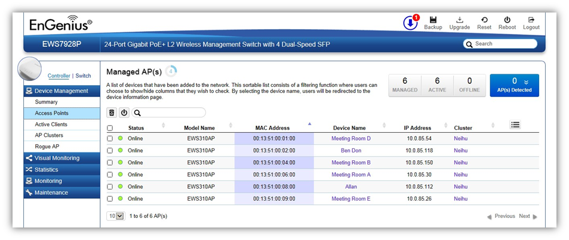
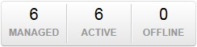
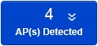

Device Management > Access Points
This page displays the status of all EWS Access Points that your Controller is currently managing as well as all the EWS Access Points in the network that the Controller has discovered. Use this page to add EWS Access Points to your EWS Controller Access Point list. For the discovery procedure to succeed, the EWS Switch and the EWS Access Point must be connected in the same network. The EWS Switch can discover supported EWS Access Points with any IP address and Subnet settings.

Managing Access Points
EWS Access Points can either be configured individually or configured as a group within a cluster.
To manage an Access Point individually, click on the Device Name field of the Access Point you wish to configure and you will be directed to a screen where you can configure settings for the Access Point.
To manage Access Points as a group, go to Device Management > AP Clusters to create a cluster and add members into the cluster. Click on the Cluster field of the cluster you wish to configure and you will be directed to a screen where you can configure settings for the Cluster.
Cluster settings can be overridden by individual AP settings. For example, if you want to set the transmit power to a lower setting for only a few specific APs, leave the Transmit Power at Auto in the Wireless Radio Settings of the cluster, then click on the Device Name field of the Access Point (which is already in a cluster) you wish to configure and you will be directed to a screen where you can configure override settings for the selected Access Point.
Refresh Countdown Timer
This is the time left before the page auto-refreshes. The countdown is from 15 seconds.
Dashboard
The Dashboard shows the current status of all the EWS APs that has been managed by the EWS Switch.

Managed: This shows the number of APs in the managed AP database that are configured with the EWS Switch.
Active: This shows the number of managed APs that currently have an active connection with the EWS Switch.
Offline: This shows the number of managed APs that currently do not have an active connection with the EWS Switch.
AP(s) Detected List
Reveals a list of all APs in the network that the EWS Switch automatically discovers. Mouse over the discovered Access Point to show general information such as the MAC address,
IP address, Model name and firmware version.

Remove AP
The Remove button removes selected Access Point(s) from list. Access Points removed will be automatically set to standalone mode with all settings restored to their factory default settings.
Reboot AP
The Reboot button will reboot the selected Access Point(s).
Search Bar
Use the Search Bar to search for Access Points managed by the EWS Switch using the following criteria: Status, model name, MAC Address, Device name, IP address, Firmware Version, Cluster.
Status
This indicates the current status of the managed Access Point.
Online |
AP is connected and managed by EWS Switch. |
Provisioning |
AP is currently in the process of connecting to the EWS Switch. |
Applying Change |
AP is currently applying system changes. |
Connecting |
AP is currently connecting to EWS Switch. |
Offline |
AP is currently offline. |
Resetting |
AP is resetting. |
Firmware Upgrading |
AP is currently undergoing firmware upgrade process. |
Invalid IP |
The subnet of managed AP’s IP address is not the same as the EWS Switch. Please remove AP and reconfigure AP to the correct setting. |
Incompatible Version |
AP firmware is not compatible with EWS Switch. |
Checking Certificate |
EWS Switch is checking the SSL Certificate of AP. |
Model Name
Shows the model name of the managed Access Point.
MAC Address
Shows the MAC address of the managed Access Point.
Device Name
Displays the device name of the managed Access Point.
When the AP is not a cluster member, click on this field and you’ll be redirected to the configuration page where you can edit settings such as device name, IP Address, Wireless Radio settings.
When the AP is a cluster member, click on this field to configure settings for individual Access Points by overriding the cluster settings.
IP Address
Shows the IP address of the managed Access Point.
Firmware Version
Shows the firmware version of the managed Access Point.
Last Update
Display the time the Access Point was last detected and the information was last updated.
Uptime:
Displays the number of days, hours, and minutes since the AP last restarted.
Cluster
Displays the Cluster the Access Point is currently assigned to. Click on this field and you’ll be redirected to the cluster configuration page.
Column Filter
Shows or hides fields in the Access Point list.
Created with the Personal Edition of HelpNDoc: Easy to use tool to create HTML Help files and Help web sites